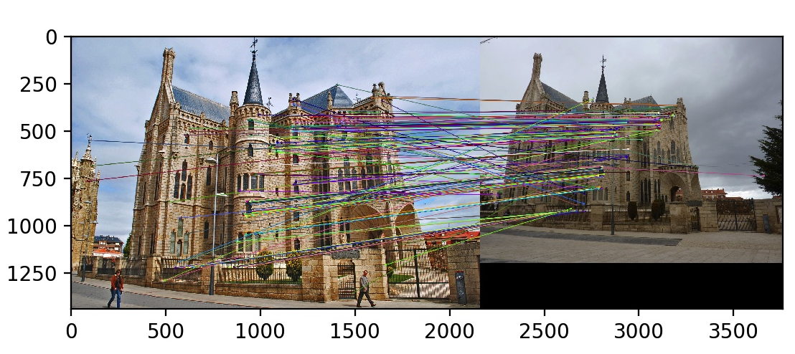
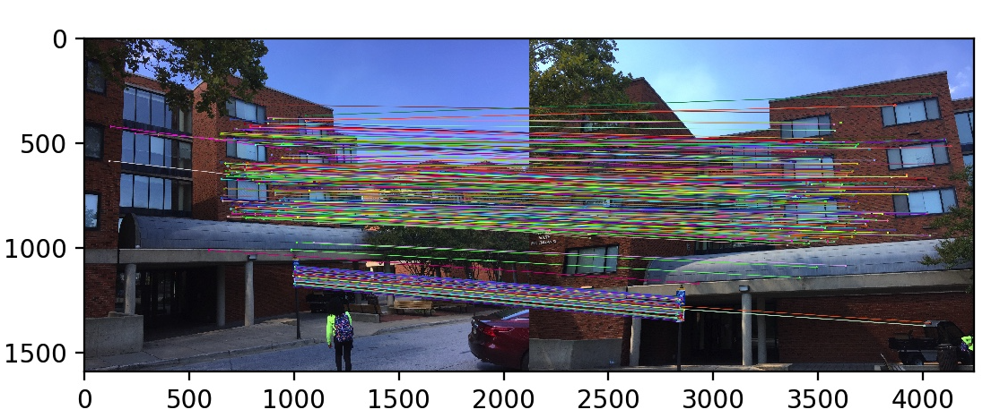

Camera Calibration and Fundamental Matrix Estimation with RANSAC
This project involves the computation of the camera projection matrix and the fundamental matrix and using that to increase the accuracy of matches obtained using ORB to get nearly perfect results. The projection matrix helps us in mapping the 3D world coordinates to 2D image coordinates. For the computation of the projection matrix, we set up a linear regression to solve for the camera parameters. The fundamental matrix relates the points in one scene to epipolar lines in another scene. Finally, we use RANSAC for the computation of the fundamental matrix and aim to improve the accuracy of the matching algorithm to get nearly perfect matches using the point correspondences obtained from ORB, which is an alternative to SIFT. The project can be divided into the following four steps.
- Computation of the camera projection matrix.
- Computation of the camera center.
- Estimation of the fundamental matrix.
- Fundamental matrix estimation using RANSAC.
Camera Projection Matrix
The camera projection matrix is a 3X4 matrix that helps us in mapping the 3D world coordinates to 2D image coordinates. For the computation of this matrix, we convert the given 2D points and corresponding 3D points to homogenous coordinates and solve a set of M homogenous equations. To solve the set of homogeneous equations, we fixed the last element of the camera projection matrix to 1 and solve for the remaining coefficients. Using this matrix, we can estimate the extrinsic and intrinsic parameters of the camera. The intrinsic parameters deal with the internal characteristics of the camera such as the image center, focal length, etc. The extrinsic parameters define the location and orientation of the camera with respect to the world frame. In this project, the camera projection matrix is used to estimate the camera center using the given 2D and corresponding 3D coordinates which turned out to be (-1.5126, -2.3517, 0.2827) in world coordinates. Figure 2 illustrates the overlay of the projected points over the actual points, and figure 3 gives us the location of the camera center in 3D world coordinates. For the given set of 2D points and corresponding 3D points the camera projection matrix was estimated to be the following with a total residual of 0.044535.
| 0.76785834 | -0.49384797 | -0.02339781 | 0.00674445 | ||
| -0.0852134 | -0.09146818 | -0.90652332 | -0.08775678 | ||
| 0.18265016 | 0.29882917 | -0.07419242 | 1 |
| Fig2. Overlay of points. | Fig3. Camera center coordinates in 3D world. |
Estimation of the Fundamental Matrix
Epipolar geometry is the intrinsic projective geometry between two views and depends only on the cameras' internal parameters and relative pose of cameras. This geometry is encapsulated by the fundamental matrix. For the computation of the fundamental matrix, the correspondences between image points are compared such that x'Fx = 0 for any pair of correspondences. The fundamental matrix is a 3X3 matrix; therefore there are nine elements, but only their ratios are important, which leaves us with eight elements to be figured out. Hence, eight pairs of correspondences are required to solve the regression equations for the estimation of the fundamental matrix. In this project the fundamental matrix has been estimated using the given pair of correspondences and to show the correctness of the estimate, epipolar lines have been drawn on one image which corresponds to a point in the other image. Figure 3 shows all the epipolar lines crossing through the corresponding points in the other image. For the image pair pic_a and pic_b the estimated fundamental matrix is the following.
| -1.17248591e-07 | 1.60824663e-06 | -4.01980786e-04 | ||
| 1.11212887e-06 | -2.73443755e-07 | 3.23319884e-03 | ||
| -2.36400817e-05 | -4.44404958e-03 | 1.03455561e-01 |
| Fig4. Epipolar lines passing through matches in image 1. | Fig5. Epipolar lines passing through matches in image 2. |
To increase the accuracy of the estimate of the fundamental matrix the coordinates have been normalized using linear transformations. The computed transform matrix is a product of the scale and offset matrix. Using the normalized coordinates does not show a big difference in the case above since the correspondences are almost perfect. But a considerable difference can be observed in other cases which have been illustrated in the results section.
Fundamental Matrix Estimation Using RANSAC
A major problem in local feature matching using the Harris corner detector and SIFT feature descriptor was the accuracy in difficult images such as Episcopal Gaudi. Using the fundamental matrix, the search for a particular match is narrowed down to a line in the second image. This property has been used to improve the accuracy of matches in pairs of images. In this project, RANSAC has been used to estimate the fundamental matrix using the pairs of correspondences obtained through ORB. Randomly eight pairs of correspondences are chosen from the matches obtained to estimate the fundamental matrix. To get the best estimate of the fundamental matrix, the number of inliers is calculated for each estimate, and the matrix with the most inliers is chosen to be the final fundamental matrix using which the incorrect ORB matches are removed.
Results
The algorithm was tested on four pairs of images and have been illustrated in the two tables below. The first table has results obtained without normalizing the coordinates while the second table has results obtained after the coordinates have been normalized.
| Epipolar Lines(Mount Rushmore) |
| Matches(Mount Rushmore) |
Epipolar Lines(Notre Dam)

|
| Matches(Notre Dam) |
| Epipolar Lines(Episcopal Gaudi) |
| Matches(Episcopal Gaudi)  |
| Epipolar Lines(Woodruff Dorm) |
| Matches(Woodruff Dorm) |
The following table has results obtained after the coordinates have been normalized. As it can be seen in the results below, the accuracy of the algorithm greatly increases, and the number of mismatches decreases considerably. The coordinates have been normalized in a way such that the mean of the coordinates is zero and the average magnitude is a small number.
| Epipolar Lines(Mount Rushmore) |
| Matches(Mount Rushmore) |
| Epipolar Lines(Notre Dam) |
| Matches(Notre Dam) |
| Epipolar Lines(Episcopal Gaudi) |
| Matches(Episcopal Gaudi) |
| Epipolar Lines(Woodruff Dorm) |
| Matches(Woodruff Dorm)  |
Conclusion
The first part of the project involved the computation of the camera projection matrix which maps the 3D world coordinates to the 2D image coordinates and estimation of the camera center. For the second part of the project, it was showed how with the help of the fundamental matrix it is possible to limit our search for respective correspondences to a line, which helps us to remove a lot of the incorrect matches that were initially present. Also, normalizing the coordinates improves the matches even further, thereby helping us to get nearly perfect results even on image pairs such as Episcopal Gaudi.